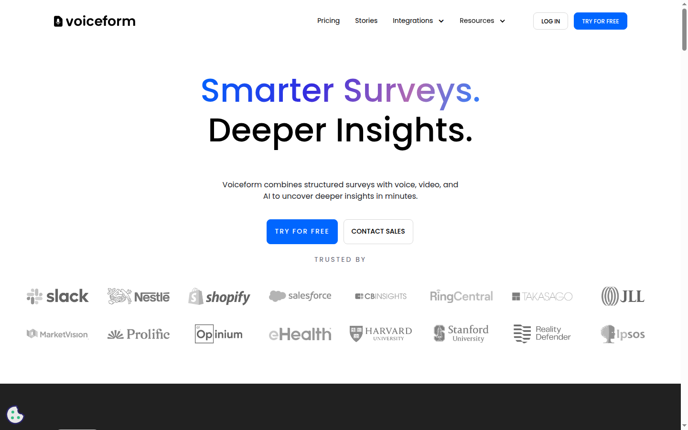

Dépasser le formulaire texte sans passer à l'interview
Les formulaires écrits classiques sont scalables mais produisent des verbatims pauvres. Voiceform laisse le répondant choisir son mode — texte, audio ou vidéo — et laisse une IA relancer quand la réponse mérite d'être approfondie.
Des questions, un canal au choix, une IA qui relance
Le créateur construit un formulaire classique (question unique, choix multiples, logique conditionnelle). Pour chaque question ouverte, il active l'AI probing : l'IA pose une ou plusieurs questions de suivi en fonction de la réponse. Les réponses audio et vidéo sont automatiquement transcrites et traduites.
Sortie analytique intégrée — transcription, extraction de thèmes, analyse de sentiment, génération de graphiques, et un chat pour interroger les données en langage naturel.
Interface
Capture de la page d'accueil — voiceform.com.

Lecture objective
Pour
- Probing IA natif : relances sans scripter.
- Multimodal (texte, audio, vidéo) côté répondant.
- Transcription + traduction intégrées.
- Analyse thèmes et sentiment livrées avec le produit.
- Plan gratuit pour tester (10 soumissions / mois).
Contre
- Quota très bas sur le plan gratuit.
- Code fermé, pas de self-host.
- Qualité du probing dépend de la formulation initiale.
- Support FR du répondant possible (multilingue), mais admin majoritairement en anglais.
Tarification publique
Free — 10 soumissions / mois, 1 siège, toutes les questions, logique conditionnelle. Payant — à partir de 45 $ / mois. Custom — sur devis pour volumes, sécurité renforcée, support.